Safety Point
How to improve public safety in Barcelona.
Project developed focusing on Design Thinking methodology. The premise was centered around how public safety can be improved in the city of Barcelona.
We ended-up with SAFETY POINT, a public security service that works through relief points located in the cities. These points allow victims who have just suffered theft to identify themselves, be geolocated and declaring their belongings stolen.
ROLE UX Designer in a multidisciplinary team of three people
CONTEXT Improving public safety with Design Thinking
TOOLS Figma, Principle | Miro, Whismical
MORE INFO Research article | Design article
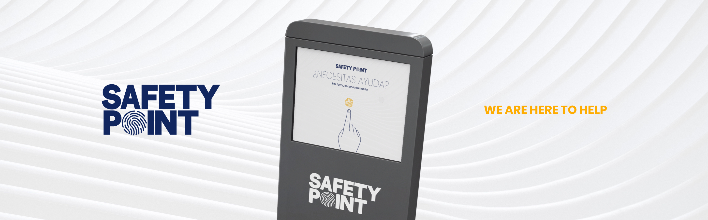
_____________00PROBLEM STATEMENT
Over 25% of residents in Barcelona have been the victim of one or more crime in the past year – a level not seen since 1986 during the heroin epidemic.
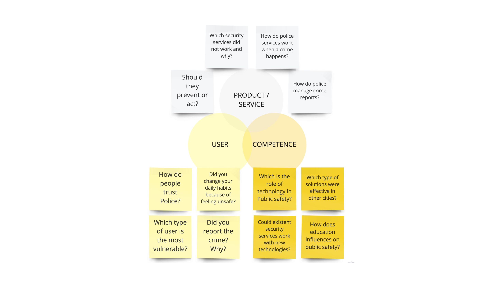“Several violent robberies, including the mugging of a foreign diplomat, have drawn attention to a wave of crime in Barcelona that is alarming residents and the local authorities.” BBC news
"Crime in Barcelona has jumped by 20.5% overall and 22.7% in the case of theft." Spanish Interior Ministry
_____________01QUANTITATIVE RESEARCH
We asked users through an online survey about public safety and call for their opinion. This was key to identify some patterns. With over +200 answers, +70% of people suffered a crime and in the +60% of cases was a Theft. The fact to hightlight is that people do not report mainly for Laziness of the process.
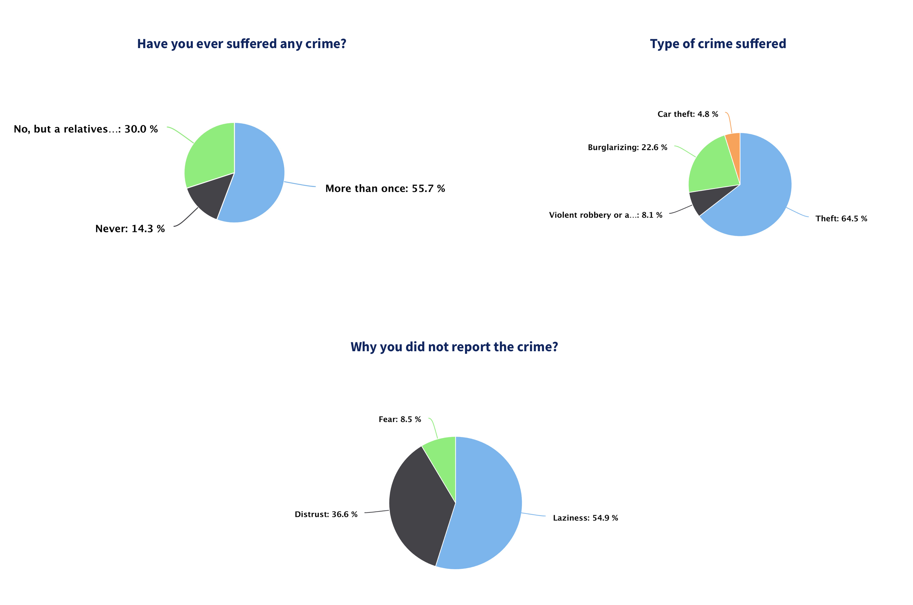_____________02QUALITATIVE RESEARCH
Once we had some interesting data, we focused on in-depth interviews with key users, one policeman and two victims of crime. Then, thanks to analysing the User Journey and its pain points we noticed that, apart from at the time when they realize they have been stolen, users feel even worse thinking about the consequences of “the after theft”. This is the isolation they feel and the uncertainty they experience. A Service Blueprint helped us to understand how the process of reporting a crime works at the police station.
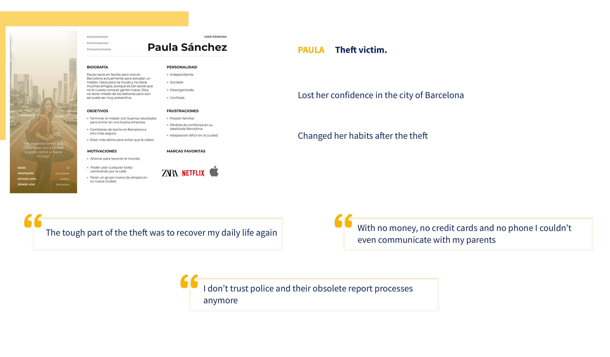 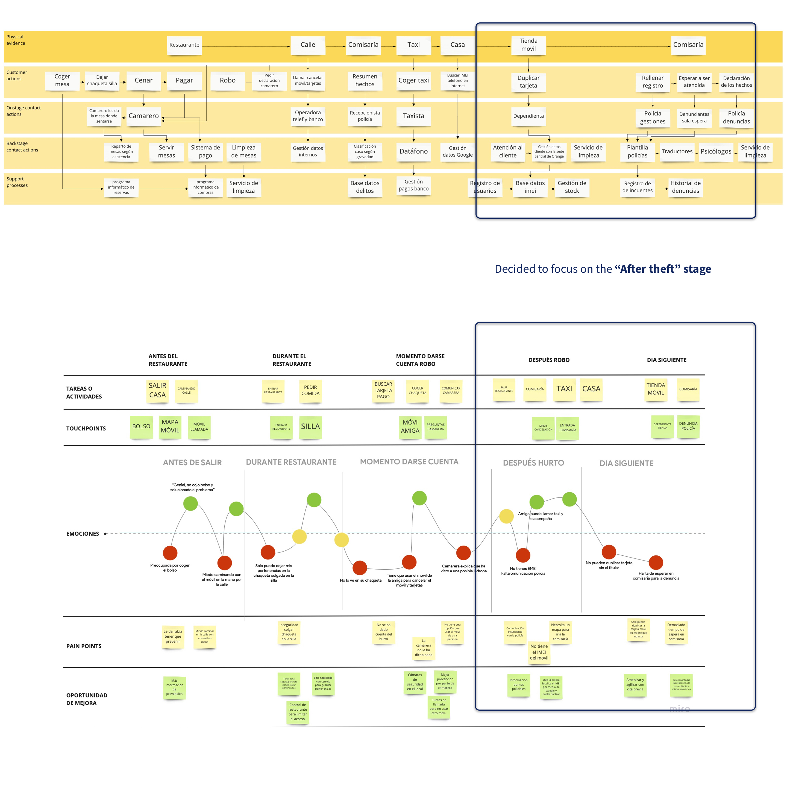_____________03DEFINING
We can now understand the needs expressed and not expressed by our users. Extracted insights and prioritized them. Then, with ideation techniques and HMW questions defined a value proposition.
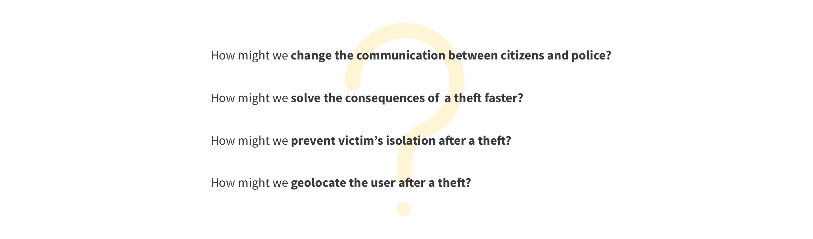_____________03VALUE PROPOSITION
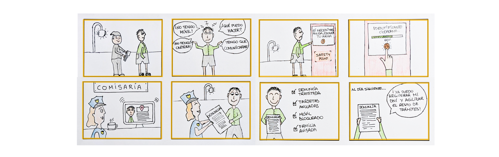SAFETY POINT is a public security service that works through relief points located in the cities. These points allow victims who have just suffered theft to identify themselves with their fingerprints and be geolocated to ask the police directly for help.
In this way, we digitize the police service and expedite the management of its resources so that the person receives assistance in the shortest possible period of time, facilitating the subsequent process of the complaint and reducing emotional damage of the victims.
_____________04USER FLOW & IA
Low-fidelity user flow to get an idea of how we wanted to map out Safety Point from onboarding to finish. We really wanted to focus on an easy and fast process to report a theft and improve the communication between Police and Citizen. Mapping out the Information Architecture for this helped a lot.
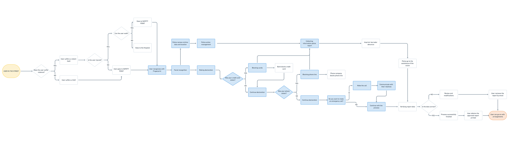 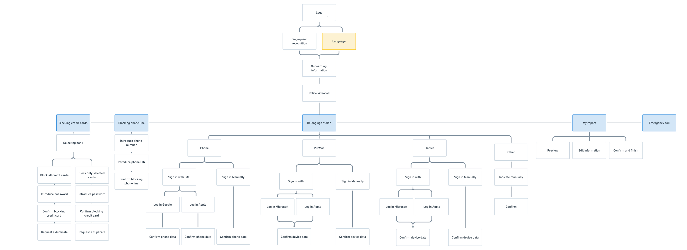_____________05STYLE-SCAPE
We wanted to create a calming and safe experience for the user, so the colors, composition and typeface was key to ahieve it. Poppins was the typeface of choice because it is a sans-serif, allowing for better readability & legibility in digital format.
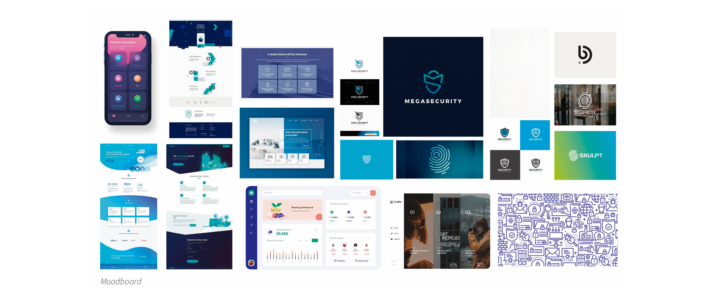 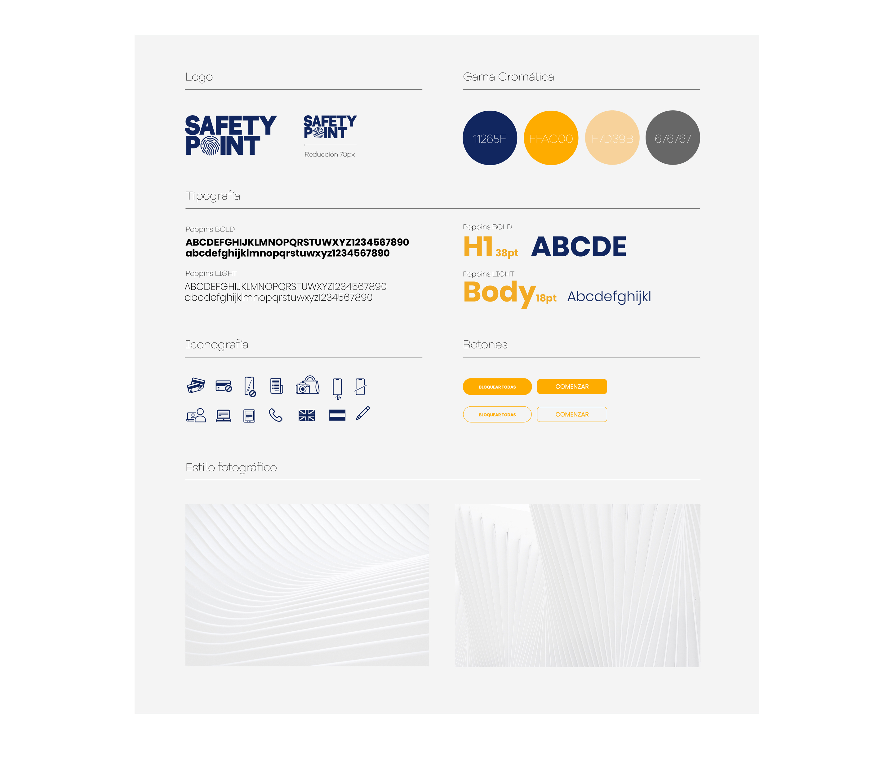_____________06HI-FI DESIGN
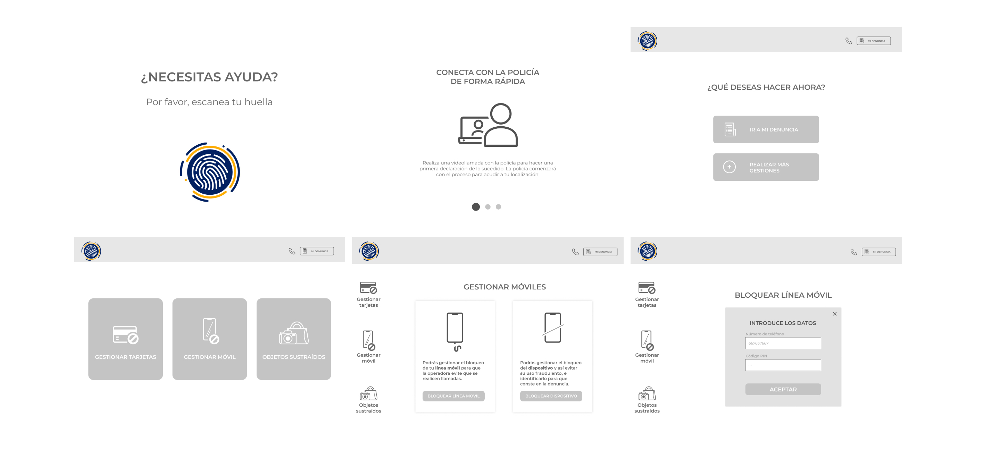_____________07USER LAB TEST
We worked on a User Lab Test to analyze how real users felt while using SafetyPoint. We tested a total of 5 different users, focusing on different phases of the app, those phases being:
- Onboarding phase
- Questionnaire phase
- Interactions phase
Bellow, an example of a potential improvement of the part of Managing phone, since users did not consider easy to understand the differences between both steps. Blocking the phone line and Blocking the device.
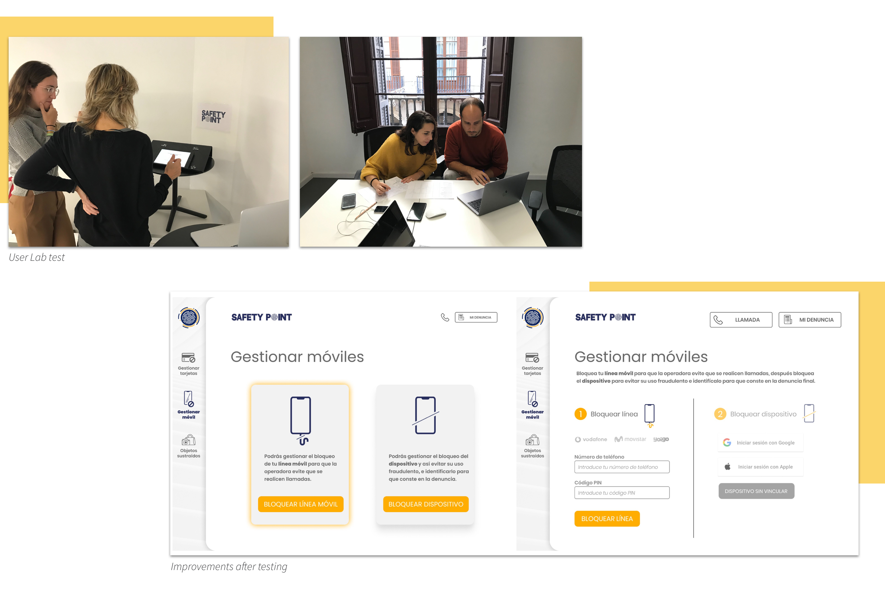To know more about SAFETY POINT and the process, please check out the Medium article!